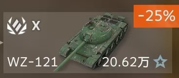
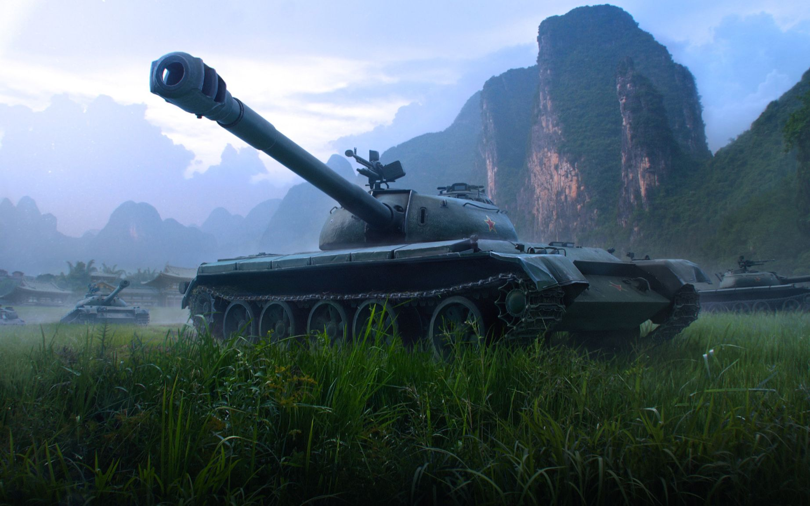

Congratulations! You pass the test and get Medium Tank WZ-121!
Introduction
基于 59 式的新型中型坦克的开发始于 1962 年。预计新坦克将改进火力和装甲保护。然而，该项目很快就被取消了。
后来在 69 型坦克的开发中应用了一些技术创新。在中国的核武器试验中，所有 121 辆坦克原型都被摧毁。
121 延续了中国在中型坦克上安装最大火炮的传统。121 是对 WZ-120 的全面改进，改进的枪支操控性和 DPM 是主要优点。
凭借 122 毫米火炮，121 在窥视和轰炸的角色中表现出色，可能会超过大多数其他中型坦克甚至重型坦克。
盔甲可能不适合在前线正确使用，但一如既往，锅盖形炮塔和倾斜的正面装甲板将扩展您的生存能力。
121 在直接的近距离混战中对任何坦克来说都是一个威胁性的对手，并且足够灵活，可以以其单发的伤害输出进行交换。
尽管如此，如果不按照自己的方式战斗，预计会很挣扎 - 火炮操控远不及最好的 T10 中型坦克。

The process must be hard!
Click here to get other tanks.